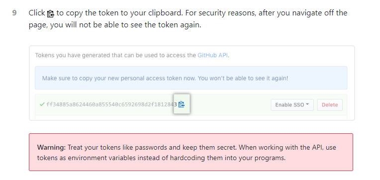
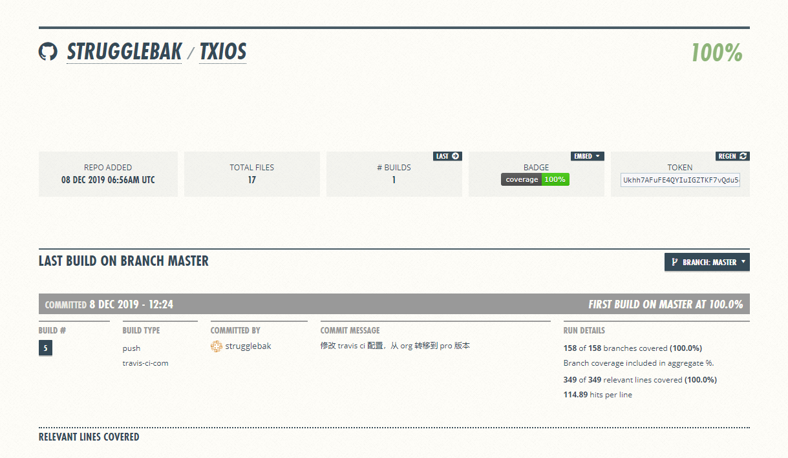

配置代码覆盖率的这个徽标也是一个很麻烦的问题，由于采用的是 travis 这个 ci 工具，所以坑还是有点多的，这里也记录了如何生成一个 github 的 token，也算做个记录
找库
首先是看到 axios 这个库 里面有个 coverage
然后查人家的 package.json 发现是用 coveralls 这个工具的，并且命令为"coveralls": "cat coverage/lcov.info | ./node_modules/coveralls/bin/coveralls.js"
原理就是用 coveralls 这个工具计算好代码覆盖率之后，会在项目根目录下生成 coveralls 文件夹，里面就有相关的文件以及最关键的 – lcov.info， 这个文件就是我想要的那个徽标
网站配置
首先我项目都是基于 TravisCI 进行持续集成的，最开始的 .travis.yml 如下language: node_js
cache:
directories:
- "~/.npm"
notifications:
email: false
node_js:
- '10'
- '11'
- '8'
script:
- npm run test:prod && npm run build
after_success:
- npm run travis-deploy-once "npm run report-coverage"
- if [ "$TRAVIS_BRANCH" = "master" -a "$TRAVIS_PULL_REQUEST" = "false" ]; then npm
run travis-deploy-once "npm run deploy-docs"; fi
- if [ "$TRAVIS_BRANCH" = "master" -a "$TRAVIS_PULL_REQUEST" = "false" ]; then npm
run travis-deploy-once "npm run sr"; fi
branches:
except:
- "/^v\\d+\\.\\d+\\.\\d+$/"
按照道理来说，配置好后提交，然后 travis 那边只需要关联上你对应的项目就好，但是会出一个 bug 报错Error: GitHub authentication missing
at validate (/home/travis/build/strugglebak/txios/node_modules/travis-deploy-once/lib/validate.js:12:27)
at module.exports (/home/travis/build/strugglebak/txios/node_modules/travis-deploy-once/lib/travis-deploy-once.js:25:3)
...
看了下是执行npm run travis-deploy-once "npm run report-coverage"
这句话报错的，刚好是要执行代码覆盖率相关操作的语句。 先放在这里不管，继续找徽标
shields.io
google 搜 github 徽标，出来第一个结果就是 shields.io 相关的，然后找 Code Coverage，匹配到 coveralls 相关的
再一搜原来需要登陆 Coveralls 的官方网站搞，于是用 github 账号登陆coveralls 官网，看了下应该也是需要关联仓库的，点击左边的 Add Repos
添加完之后点击 REPOS 然后再点击刚刚添加项目会发现如下说明
wtf。。。我才知道原来 travis 还有 pro 版本，赶紧一搜，原来是 travis-ci.org 和 travis-ci.com 的区别，估计是重构了服务什么的吧，这个就先没管了，于是搜 [coveralls 使用]，条件是过去一年内, 看到了知乎的一篇文章,浏览量下也就很普通的解决方案，但是用的是 travis-ci.com 也就是所谓的 pro 版本，于是登陆 pro 版，也是 github 账号登陆，选择管理项目的时候选择了[自己的 github 的所有 repo] 而不是 [指定的项目]，但是在搜索框搜项目的时候居然不存在。。。
于是乱点了下，点击那个 Migrate tab 后终于出现了
现在我懂了，如果你是从 travis-ci.org 那边过来的，那边如果有项目在的话，要在这个 travis-ci.com 用，必须要[迁移]过来。
现在照着知乎那篇帖子配置了下， git push 后看结果，傻眼了，还是报那个错，而且刷新 Coveralls 的相关项目页的时候还是没有出现所谓的[代码覆盖率的报告]，但是如果不生成这个报告的话，你就拿不到代码覆盖率的徽标了，继续搜索尝试解决问题
bug 报错的提示
前面说了那个 bug 的提示就是Error: GitHub authentication missing
貌似就是跟 github 项目相关的 token 验证有关系，于是搜
[travis github token set]，第一个无脑点进去看
还是官方文档
看懂了，是这样的一个过程。
一般是你要在 travis 帮你在 github page 上部署你的静态文件时会用到 personal access token 这个玩意儿，然后这个 token 是很敏感的私密字符串(因为你可以用这个 token 代替密码来进行仓库的一些操作)， 所以你需要对其进行加密处理
点击人家推荐的链接repository settings 里面看
最终得到类似这么个玩意儿

然后点击人家推荐的链接encrypted variables
然后再点击 Encryption keys – Usage
返回去看了下
看了下，大致意思就是，你可以使用下面这条命令travis encrypt --pro SOMEVAR="secretvalue" --add
去加密一个变量，然后这个就会以加密后的一串字符串追加到 .travis.yml 文件后env:
global:
secure: WPuJZvLNAyAfwu2gM89Y3t520/rnO5GK25Bf1WViJff5q...
这就表示把你定义的变量加入到 travis 这个环境变量里面去了，然后你在 travis 上编译测试成功后，会在你项目你自己已经定义好的变量中去找，因为这是一个 key 和 value，找到你对应的 key 再解密然后比对 value，就达到了权限验证的目的了。
这里我执行的命令是
travis encrypt --pro GITHUB_TOKEN="yourgithubtokenvalue" --add
比如我的就是设置的变量名就是 GITHUB_TOKEN，就在 travis 项目中的 setting 页面中的那个 Environment Variables 里填，Value 项就是你在 github 上设置成功的 token 值，然后点击 Add 添加
最后就是项目的修改和提交了，主要就是更改了 .travis.yml 配置文件，提交了之后等待 travis 测试通过，再刷新 Coveralls 官网对应的项目，看到下图表示代码覆盖率报告已经生成，也就是说可以在 shields.io 上拿到 coverage 的徽标了!

travis 相关文件配置
deploy: |
注意我写的 $GITHUB_NAME 这里就是获取到你在 travis 上配置的环境变量名。
最后的最后需要注意的，可能是一个坑，但是我还是加上了，就是有看到 github 上有 issue 讨论这个问题GH_TOKEN has not authenticated Travis CI yet
然后他是通过在 package.json 中的 travis-deploy-once 后加 --pro 解决的
为了以防万一，我也在项目中加了, 我的项目地址为txios - 基于 TypeScript 的轻量级 http 库
虽然没试过，但是加了没有问题，就这样问题解决了。
总结
这个坑之前搞 travis ci 的时候没碰到过，算是给自己一个记录，以后谁踩坑了可以参考我这篇博客哈哈。